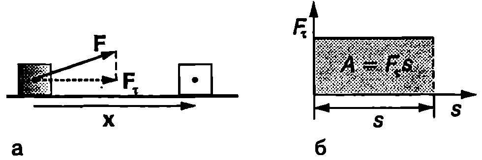
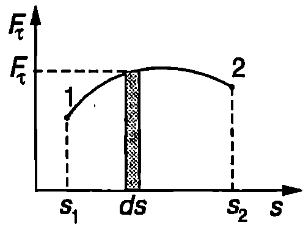
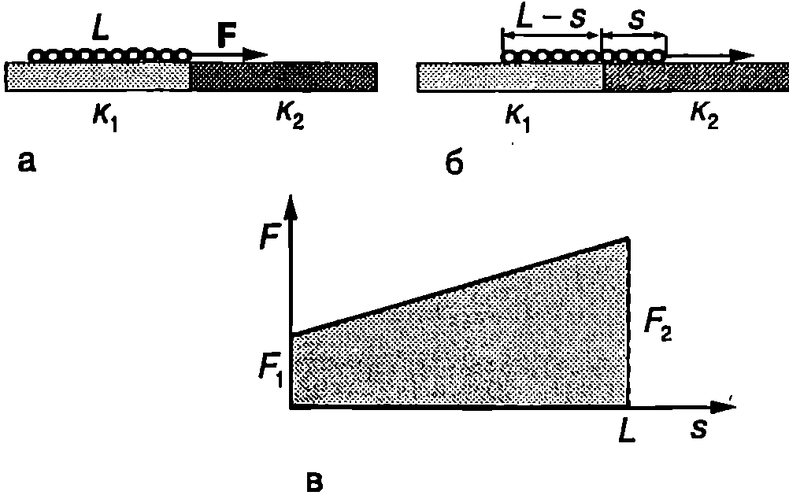
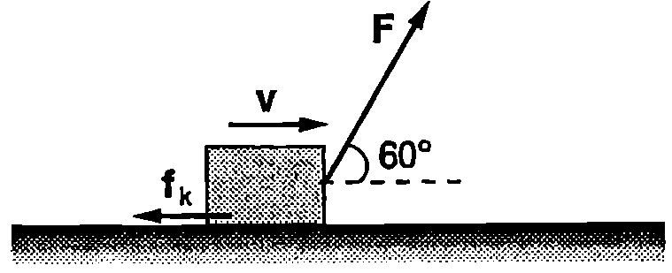
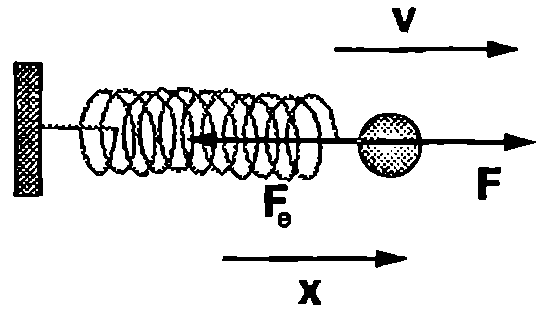
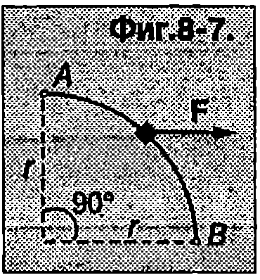

За описване движението и взаимодействието на телата се използват два подхода: 1. динамичен подход разглеждат се силите, действащи на телата, и непосредствено се прилагат трите принципа на механиката; 2. енергетичен подход — проследява се изменението на механичната енергия на телата в резултат на работата, която извършват приложените към тях сили. Трябва да се подчертае, че енергетичният подход в механиката също се основава на трите принципа на Нютон и по същество не съдържа нови физични идеи. Законът за запазване на механичната енергия може да се изведе като следствие от принципите на механиката. Във Вселената обаче енергията се среща в различни форми: механична енергия, електромагнитна енергия, вътрешна (топлинна енергия), химична енергия, ядрена енергия. Тя може да се преобразува от една форма в друга форма и да преминава от едно тяло (или система) в друго тяло (система), но нейното общо количество винаги остава едно и също. Запазването на енергията е един от най-общите физични принципи, валиден за всички физични, химични, биологични и други процеси.
Ще дадем определение на величините работа, мощност и енергия и ще установим връзката между работата и различните видове енергия на една механична система.
Работа на постоянна сила при праволинейно движение
Тяло (материална точка) се движи праволинейно. На тялото действа постоянна по големина и посока сила $\vec F$, сключваща ъгъл $\alpha$ с посоката на движение. За определен интервал от време тялото извършва преместване $\vec x$ (Фиг. \ref{fig:8.1}а). Величината $$A = \vec F \cdot \vec x = |\vec F||\vec x|\cos\alpha, $$ равна на скаларното произведение на силата по преместването, се нарича работа на силата. Тя се представя също във вида $$A = F_\tau s, $$ където $F_\tau = |\vec F| \cos\alpha$ а е компонентата на вектора $\vec F$, която е успоредна на преместването $\vec x$ (Фиг. \ref{fig:8.1}а). При праволинейно движение в една посока големината на преместването е равна на изминатия път: $s = |\vec x|$. За разлика от силата и преместването, работата е скаларна величина, която може да има както положителни, така и отрицателни стойности. Работата в положителна, когато посоката на силата сключва остър ъгъл ($\alpha < 90^\circ$) с посоката на преместването. При $\alpha > 90^\circ$ $\cos\alpha < 0$ и работата е отрицателна. Когато силата е перпендикулярна на преместването ($\alpha = 90^\circ$), тя не извършва работа: $A = |\vec F||\vec x| \cos 90^\circ = 0$.
От определението \eqref{eq:8.1} за механична работа непосредствено следва, че една сила може да извърши работа, само ако тялото (материална точка), към което е приложена, се премества. Ако едно тяло е в покой, нито една от приложените към него сили не извършва работа. Например, ако натискаме с ръка неподвижна стена, няма да извършим механична работа, независимо от голямото мускулно усилие, което прилагаме.
Единицата за работа се нарича джаул. Съгласно с уравнение \eqref{eq:8.1} един джаул (1J) е работата, която извършва постоянна сила с големина един нютон (1 N), насочена успоредно на преместването, при преместване на тяло на един метър (1 m):
$$1~\mathrm{J}=1~\mathrm{N\cdot m}.$$
На Фиг. \ref{fig:8.1}б е показана графиката на успоредната на преместването компонента $F_\tau$, на силата като функция от изминатия път $s$. Площта на защрихования правоъгълник е $F_\tau s = A$. Следователно работата $A$ на постоянна сила при праволинейно движение се представя графично с площта на правоъгълника, образуван от абсцисната ос (ос на изминатия път $s$), графиката на компонентата $F_\tau$, на силата и перпендикулярите, издигнати от началното и крайното положение на материалната точка.

`Фиг. 8.1`
Работа на променлива сила
Сега ще разгледаме общия случай, когато материална точка се движи по криволинейна траектория. Елементарното преместване $d\vec r$, което точката извършва за безкрайно малък интервал от време $dt$, в насочено по допирателната към траекторията. На материалната точка действа сила $\vec F$ (Фиг. \ref{fig:8.2}). Величината $$dA = \vec F \cdot d\vec r $$ се нарича елементарна работа на силата $\vec F$, извършена при елементарното преместване $d\vec r$. Да разложим силата $\vec F$ на две компоненти, насочени съответно по тангентата и по нормалата към траекторията: $\vec F = \vec F_\tau +\vec F_n$. Компонентата $\vec F_n$, която в перпендикулярна на елементарното преместване от, не извършва работа. Следователно елементарната работа е $$dA = \vec F_\tau \cdot d\vec r= F_\tau |d\vec r| = F_\tau ds $$ където сме отчели, че модулът на елементарното преместване е равен на изминатия път $ds$. На Фиг. \ref{fig:8.3} е представена графично тангенциалната компонента $F_\tau$ на силата като функция на пътя $s$. Ако разбием пътя $s$, изминат между точките 1 и 2, на елементарни участъци с дължина $ds$, тогава елементарната работа за всеки от тях графично се представя с площта $dA = F_\tau ds$ на един малък правоъгълник (Фиг. \ref{fig:8.3}). Цялата работа $A_{12}$ на силата $\vec F$ на разглеждания участък 12 от траекторията се получава като се сумират елементарните работи, т.е. площите на всички малки правоъгълници. Тяхната обща площ (работата $A_{12}$) е равна на площта на фигурата, образувана от графиката на функцията $F_\tau(s)$, абсцисната ос $s$ и перпендикулярите, издигнати от началната точка $s_1$ и крайната точка $s_2$. Аналитично работата $A_{12}$ се задава с определения интеграл

`Фиг. 8.2`

`Фиг. 8.3`
$$A_{12} =\int_1^2 \vec F \cdot d\vec r= \int_1^2 F_\tau ds $$ пресметнат по траекторията на материалната точка.
Когато на материална точка действат едновременно няколко сили $\vec F_1, \vec F_2,\dots, \vec F_n$ общата работа е сума от работата на всяка една от силите: $A = A_1 + A_2 +\dots+A_n$. Работата е положителна в тези участъци от траекторията, където векторът на елементарното преместване $d\vec r$ и компонентата $\vec F_\tau$ на силата имат еднакви посоки. Когато векторите $d\vec r$ и $\vec F_\tau$ са с противоположни посоки, работата е отрицателна.
Пример 8.1
Еднородна верига с маса $m$ и дължина $L$ е поставена перпендикулярно на границата на две хоризонтални опори (Фиг. \ref{fig:8.4}а). Коефициентите на триене между веригата и опорите са съответно $k_1$ и $k_2$ ($k_1<k_2$). Определете минималната работа, която трябва да извърши хоризонтална сила, за да изтегли веригата от едната опора върху другата опора. \end{psexample}
Решение
Работата е минимална, когато хоризонталната сила $F$ е равна по големина на силата на триене при хлъзгане. Да означим с $s$ дължината на тази част от веригата, която в даден момент вече е преминала върху втората опора (Фиг. \ref{fig:8.4}б). Резултантната сила на триене е сума от силите на триене, действащи на двете части на веригата
$$f_k=f_{k1}+f_{k2}=k_1g\frac{m}{L}(L-s)+k_2g\frac{m}{L} s,$$

`Фиг. 8.4`
където $\displaystyle \frac{m}{L}(L-s)$ и $\displaystyle \frac{m}{L} s$ са масите на двете части на веригата. Следователно силата на триене и движещата сила са линейна функция на $s$. Големината на силата се изменя от $F_1 = f_{k1} = k_1 mg$ при $s = 0$, когато веригата лежи изцяло върху първата опора, до $F_2 = f_{k2}= k_2 mg$ при $s = L$, когато веригата изцяло е преминала върху втората опора. Графиката на функцията $F(s)$ е показана на Фиг. \ref{fig:8.4}в. Ще определим работата графично тя е равна на площта на сивия трапец от Фиг. \ref{fig:8.4}в
$$A=\frac{F_1+F_2}{2}L = \frac{1}{2}(k_1 + k_2)mgL.$$
Пример 8.2
Самолет, който се засилва по пистата за излитане, се движи равноускорително с ускорение $a$. Представете работата на силата на съпротивление на въздуха $F$ като функция на скоростта на самолета. Силата $F$ e пропорционална на квадрата на скоростта: $F = -Cv^2$, където $C$ е положителна константа. Знакът минус показва, че силата на съпротивление е насочена обратно на скоростта. \end{psexample}
Решение
Елементарната работа на променливата сила $F$ e
$$dA= \vec F.d\vec r=-Cv^2ds.$$
При равноускорително движение без начална скорост в $s = v^2/2a$ (вж. Пример~\ref{ex:1.4} на стр.14). Диференцираме двете страни на това равенство и получаваме: $ds = vdv/a$. Заместваме $ds$ във формулата за елементарната работа и интегрираме в граници от $v = 0$ до моментната скорост $v$
$$A= -\int_0^v \frac{cv^3}{a}dv= -\frac{Cv^4}{4a}.$$
Знакът минус показва, че силите на съпротивление на въздуха извършват отрицателна работа, тъй като са насочени в противоположната на скоростта (преместването) посока.
Мощност
Величината $$P = \frac{dA}{dt} $$ т.е. работата, извършена за единица време, се нарича мощност.
Единицата за мощност е ват (W). Съгласно с уравнение \eqref{eq:8.6} мощността е
един ват (1 W), когато за време една секунда (15) се извършва работа един джаул (1 J), т.е. 1 W = 1 J/s.
Заместваме елементарната работа $dA$ от уравнение \eqref{eq:8.3} в \eqref{eq:8.6} и получаваме $$P = \frac{\vec F \cdot d \vec r}{dt} = \vec F \cdot \vec v $$ където сме отчели, че $\displaystyle\frac{d\vec r}{dt} v$ е скоростта на материалната точка. Следователно мощността е равна на скаларното произведение на действащата силата по скоростта на материалната точка.
Пример 8.3
Трупче се хлъзга по хоризонтална равнина (Фиг. \ref{fig:8.5}). Определете мощностите на силата $\vec F$ и на силата на триене $\vec f_k$ в момента, когато скоростта на трупчето в $v = 2$ m/s. Големините на двете сили са $F = 3$ и $f_k = 1$ N. Колко вата е в този момент общата мощност на всички сили, приложени към трупчето? \end{psexample}

`Фиг. 8.5`
Решение
Моментната мощност на силата $\vec F$ e $$P_1 =\vec F\cdot\vec v=Fv\cos 60^\circ =-3~\mathrm{W}.$$
Моментната мощност на силата на триене е $$P_2=\vec f_k\cdot\vec v\cos 180^\circ=-2~\mathrm{W}.$$
На трупчето действат още две сили: силата на тежестта $\vec g$ и силата на нормална реакция на опората $\vec N$. Те обаче са насочени перпендикулярно на скоростта $\vec v$ на трупчето, поради което тяхната работа и мощност е нула. Следователно общата мощност на всички сили, действащи на трупчето е
$$P = P_1 + P_2 = 3~\mathrm{W}-2~\mathrm{W}=1~\mathrm{W}.$$
Кинетична енергия
Материална точка с маса $m$ извършва криволинейно движение под действие на сила $\vec F$. Разлагаме силата $\vec F$ на две (тангенциална и нормална) компоненти (Фиг. \ref{fig:8.2}).
Съгласно с втория принцип на механиката $\vec F_\tau = m\vec a_\tau$, където $\vec a_\tau$ е тангенциалното ускорение на материалната точка. В уравнение \eqref{eq:8.5} заместваме $\displaystyle F_\tau = m\vec a_\tau = m \frac{dv}{dt}$ (вж. уравнение \eqref{eq:2.19} и пресмятаме работата на силата $\vec F$, когато материалната точка се придвижва по траекторията от положение 1 до положение 2 $$A =\int_1^2 \left(m\frac{dv}{dt}\right) ds = \int_{v_0}^v mvdv = \frac{mv^2}{2} - \frac{m v_0^2}{2}, $$ където $ds/dt = v$ е големината на моментната скорост, а $v_0$ и $v$ са съответно големините на скоростта в началната точка 1 и в крайната точка 2.
Величината $$E_K = \frac{mv^2}{2} $$ се нарича кинетична енергия на материалната точка. Кинетичната енергия е равна на половината от произведението на масата $m$ на тялото и квадрата на скоростта му $v$. Измерва се в същите единици, както работата в джаули (J). Тя е скаларна величина, която винаги има положителни стойности или е равна на нула, ако тялото е в покой.
Уравнение \eqref{eq:8.8} може да се запише във вида $$A = E_K - E_{K0} = \Delta E_K $$ Полученото уравнение изразява закона за изменение на кинетичната енергия, който гласи:
Изменението на кинетичната енергия на едно тяло (материална точка) е равно на работата на равнодействащата на всички сили, приложени към тялото
Уравнение \eqref{eq:8.10} се записва също така във вида $$E_K = E_{K0} + A $$ Следователно крайната кинетична енергия $E_k$ е равна на началната кинетична енергия $E_{k0}$ плюс работата $A$, извършена върху тялото. Ако в началния момент тялото е в покой ($v_0 = 0$ и $E_{k0} = 0$), а в крайния момент се движи със скорост $v$ и има кинетична енергия $E_k = mv^2/2$, уравнение \eqref{eq:8.11} получава вида $$E_K = \frac{mv^2}{2} = A $$
Следователно кинетичната енергия е равна на работата, която трябва да се извърши от външна сила, за да се ускори едно тяло от покой до скорост $v$.
Предаване и преобразуване на енергията
С помощта на уравнение \eqref{eq:8.11} ще проследим как се изменя кинетичната енергия на едно тяло в резултат на взаимодействието му с други тела. Когато силите, приложени към тялото, извършват положителна работа ($A > 0$), от уравнение \eqref{eq:8.11} следва, че кинетичната енергия на тялото нараства ($E_k>E_{k0}$) и то започва да се движи с по-голяма скорост. Например при тласкане на гюлле атлетът извършва положителна работа чрез силата, с която действа на гюллето: гюллето се ускорява и кинетичната му енергия нараства. Процесът на взаимодействие между атлета и гюллето може да се разглежда като процес на обмяна на енергия: атлетът предава енергия на гюллето посредством положителната работа, която той извършва.
Когато извършената върху тялото работа е отрицателна ($A < 0$), от уравнение \eqref{eq:8.11} следва, че кинетичната му енергия намалява ($E_k<E_{k0}$ и то забавя движението си. Ще се спрем на този случай по-подробно, като анализираме примера, показан на Фиг. \ref{fig:8.6}. На топчето е придадена начална скорости (начална кинетична енергия $E_{k0} = mv^2/2$). То започва да се движи и да разтяга пружината, към която е закрепено. Еластичната сила $\vec F_e$, с която пружината действа на топчето, е насочена обратно на посоката на неговото преместване $\vec x$ и пружината извършва отрицателна работа $A_\text{пр} <0$. Силата $\vec F$, с която топчето действа на пружината, обаче е насочена по посока на преместването на края на пружината, поради което работата $A_T$ на топчето е положителна ($A_T > 0$).

`Фиг. 8.6`
По модул отрицателната работа $A_\text{пр}$ на пружината е равна на положителната работа $A_T$ на топчето (съгласно с третия принцип на механиката силите $\vec F$ и $\vec F_e$ са равни по големина и противоположни по посока). Тялото, което извършва положителна работа, отдава енергия, а тялото, което извършва отрицателна работа приема тази енергия. В случая топчето извършва положителна работа за сметка на кинетичната си енергия: топчето отдава кинетичната си енергия, която в резултат на извършената от него положителна работа за разтягането на пружината се преобразува в енергия на деформираната пружина.
И така, телата притежават енергия на движението (кинетична енергия). Тя нараства, когато външни сили извършват положителна работа върху телата. Движещите се тела също могат да извършват положителна работа върху околните тела за сметка на своята кинетична енергия.
Пример 8.4
Куршум с маса $m = 10$ g, който лети със скорост $v_0 = 500$ m/s, пробива дъска и излиза от нея със скорост $v = 200$ m/s. Колко джаула е работата на силата, с която дъската действа на куршума? Колко джаула е работата, извършена от куршума? \end{psexample}
Решение
Дъската действа на куршума със сила $\vec F$, която е много по-голяма от силата на тежестта. Затова можем да пренебрегнем силата на тежестта през времето, за което куршумът пробива дъската, и да смятаме, че $\vec F$ е единствената сила, действаща на куршума. По време на движението на куршума в дъската големината на силата $\vec F$ се изменя по сложен и неизвестен за нас начин. Независимо от това лесно можем да определим нейната работа с помощта на закона за изменението на кинетичната енергия:
$$A = E_k-E_{k0} = mv^2/2-mv_0^2/2=-1050~\mathrm{J}.$$
Дъската извършва отрицателна работа върху куршума и намалява кинетичната му енергия. Куршумът от своя страна извършва положителна работа $A’ = -A = 1050$ J, за което изразходва част от кинетичната си енергия.
Задачи
-
Тяло, което се движи праволинейно, изминава разстояние $s = 50$ cm под действие на постоянна сила с големина $F = 20$ N. Определете работата на силата $\vec F$, ако тя сключва с посоката на преместването ъгъл: а) $60^\circ$; б) $90^\circ$; в) $120^\circ$; г) $180^\circ$.
-
Тяло с маса $m = 1$ kg се движи по хоризонтална равнина под действие на лостоянна сила с големина $F = 10$ N. Коефициентът на триене между тялото и равнината е $k = 0,!2$. Определете работата на силата на триене при преместване на тялото $s = 1~\mathrm{m}$, ако силата $\vec F$ в насочена: а) хоризонтално; б) под ъгъл $\alpha = 30^\circ$ спрямо хоризонта.
-
С каква скорост кран с мощност 4 kW може да издигне товар с маса 1 t?
-
Космонавт, който извършва изследвания извън космическия кораб, е снабден с малък реактивен двигател. Космонавтът извършва маневра, при която увеличава скоростта си (спрямо кораба) от 1 m/s на 2 m/s. Колко работа извършва двигателят, ако масата на космонавта заедно с екипировката му е 100 kg?
-
Шейна се движи праволинейно по хоризонтален участък от пътя под действие на сила $F= 100$ N, която сключва ъгъл $\alpha = 60^\circ$ с хоризонта. Когато шейната изминава разстояние $s = 5$ m, кинетичната и енергия нараства с $\Delta E_k = 100$ J. Определете големината на силата на триене, действаща на шейната.
-
На частица, която се движи по оста $x$, действа сила $\vec F$, насочена в положителната посока на оста $x$. Големината на силата се изменя по закона $F = F_0 e^{-x/a}$, където $F_0 = 2$ N, $a = 3$ m. Пресметнете работата на силата $\vec F$ при преместване на частицата от $x$ = 0 до $x$ = 3 m.
-
Шайба с маса $m$, поставена върху хоризонтална равнина, получава начална скорост $v_0$. Коефициентът на триене между шайбата и равнината зависи от изминатия от шайбата път $s$ по закона $k = cs$, където $c>0$ е константа. Определете максималната (по модул) моментна мощност на силата на триене.
-
Пръстен с маса $m$ се движи по гладък проводник, извит в дъга от окръжност с радиус $r$, която лежи в хоризонтална равнина. Пръстенът преминава през точка $A$ със скорости $v_0$ в този момент започва да му действа постоянна хоризонтална сила с големина $F$ (Фиг. \ref{fig:8.7}). Определете скоростта на пръстена в точка $B$.

`Фиг. 8.7`